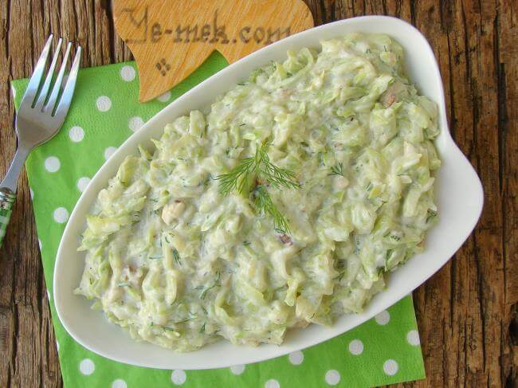

Yemek Tariflerine Hoş Geldiniz
Anasayfa
Çorbalar
Ana Yemekler
Salatalar
Mezeler

Yoğurlu Kabak Salatası
Malzemeler
- 3 adet kabak
- 2 yemek kaşığı zeytinyağı
- 1,5 su bardağı süzme yoğurt (veya normal yoğurt)
- 2 diş sarımsak
- Tuz
Üzeri İçin
- Zeytinyağı, pul biber, dereotu
Yapılışı
-
Kabakları yıkayıp rendeleyin.
-
Tavaya zeytinyağını alın, kabakları ekleyip suyunu salıp çekene kadar kavurun.
-
Ocaktan alıp soğumaya bırakın.
-
Yoğurdu bir kaba alın, ezilmiş sarımsak ve tuzu ekleyip karıştırın.
-
Soğuyan kabakları yoğurtlu karışıma ilave edin, iyice harmanlayın.
-
Servis tabağına alın. Üzerine biraz zeytinyağı gezdirin, pul biber ve ince doğranmış dereotu serpin.
👉 İsteğe göre ceviz içi de ekleyebilirsiniz, çok yakışır.